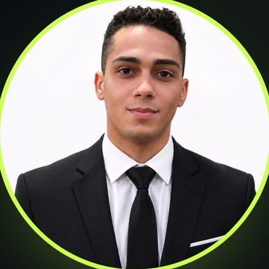

Disponível para oportunidades
Estudante de Gestão de TI||

Sobre mim
2°+
Semestre em Gestão de TI
Sou Alisson Antônio da Silva, estudante de Gestão da Tecnologia da Informação, atualmente no 2° semestre. Estou em transição de carreira para a área de TI, construindo minha trajetória por meio de estudos contínuos e projetos práticos.
Tenho desenvolvido conhecimentos em HTML, CSS e JavaScript com apoio de IA, e trago comigo uma base técnica formada no dia a dia com instalações elétricas — leitura de esquemas, atenção a detalhes e resolução de problemas.
Principais habilidades
Base em desenvolvimento web, com apoio de IA no aprendizado prático.
Visão de fundamentos e gestão de tecnologia da informação em formação.
Leitura de esquemas, precisão e resolução de problemas vindas do trabalho com instalações elétricas.
Uso de inteligência artificial como apoio no desenvolvimento e na geração de páginas.
Projetos desenvolvidos
Aplicação web que gera páginas automaticamente a partir de descrições fornecidas pelo usuário, utilizando inteligência artificial.
Este portfólio, construído com foco em clareza, tipografia e experiência responsiva.
Segunda versão do meu portfólio pessoal, com um novo layout e ajustes de identidade visual.
Vamos trabalhar juntos
Estou em busca de oportunidades na área de TI para aplicar o que venho aprendendo e continuar crescendo com projetos reais.
Entrar em contato →